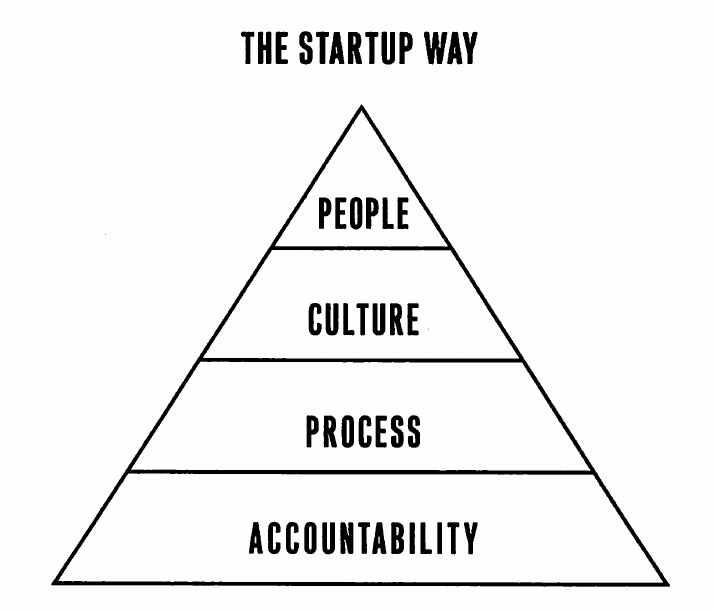

The Lean Startup
Table of Contents
Introduction
- Grim reality: most startups fail.
The lean startup method
- Entrepreneurs are everywhere
- Entrepreneurship is management
- Validated learning
- Build-Measure-Learn
- Innovation accounting
Part 1: Vision
1: Start
- "Lean Startup" comes from lean manufacturing revolution by Taiichi Ohno and Shigeo Shingo at Toyota.
- Goal of a startup is to figure out the right thing to build – the thing customers want and will pay for – as quickly as possible.
- "Lean startup" is a new way of looking at the development of innovative new products with an emphasis on fast iteration, customer insight, vision and ambition (simultaneously)
- Engine of growth
- Every new version of product, feature or marketing program –> attempt to improve the engine of growth.
- Vision –> destination in mind for the startup.
- Vision is achieved by executing a Strategy.
- business model, product road map, etc.
- Product –> result of the strategy.
- Tuning the engine –> products change constantly through the process of optimization.
- Pivot –> When the strategy has to change.
- But the vision rarely changes.
- In general management, failure is usually (1) a result of failing to plan properly, or (2) failure to execute properly. But new product development requires this kind of failure.
2: Define
- Startup –> A human institution designed to create a new product or
service under conditions of extreme uncertainty.
- Note: nothing about size of company, industry or sector of economy.
- Product –> (broad definition used) any source of value for the people who become customers.
- Usually bigger companies are good at sustaining innovation (incremental improvement), but they're bad at disruptive innovation (breakthrough new products).
- Cultivating entrepreneurship is the responsibility of senior management.
- The amount of time a company can count on holding on to market leadership to exploit its earlier innovation is shrinking.
- Therefore, a company's only sustainable path is an "Innovation factory" that uses Lean Startup techniques to create disruptive innovations continuously.
3: Learn
- "Learning" is the oldest excuse for failure of execution.
- But if the goal of entrepreneurship is to have an organization succeed in
the face of extreme uncertainty, the most vital function is learning.
- Learn which elements of strategy are working
- Learn what customers really want
- etc.
- Validated learning –> process of demonstrating empirically that a team has discovered valuable truths
- NB: Customers cannot necessarily tell you what they want – but they reveal the truth through actions or inaction.
- Need to answer "which of our efforts are value-creating and which are wasteful?"
- value –> providing benefit to the customer. Anything else is waste.
- Most of the time, customers don't know what they want in advance.
- The right way to think about productivity –> how much validated learning are you getting for your efforts. Not how much you're building.
- You want to use the Scientific Method (hypothesis testing)
4: Experiment
- If you cannot fail, you cannot learn.
- True experiment –> follow scientific experiment
- Begin with hypothesis that makes predictions –> test predictions empirically.
- Value hypothesis –> tests whether a product or service really delivers value to customers once they are using it.
- Growth hypothesis –> test how new customers will discover a product or service.
- An experiment should also be seen as a first product
This allows the spec to be rooted in real feedback on what is working right now rather than in anticipation of what might work tomorrow.
Success is not delivering a feature, success is learning how to solve the customer's problem.
— Mark Cook
- Planning is a tool that only works in the presence of a long and stable operating history.
Part 2: Steer
- Startup is a catalyst that transforms ideas into products
- As customers interact with these products, the generate qualitative feedback and quantitative feedback.
- The build-measure-learn loop -> core of Lean Startup
- The goal is minimize the total time it takes to move through the loop
- This is the essence of steering a startup
- Starts with a leap-of-faith assumption –> The riskiest element of a startup's plan, on which everything depends
- Once initial product is running –> "Build" phase as quickly as possible
- MVP –> version of product that enables full turn of Build-Measure-Learn
loop with the minimum amount of development time.
- But me must be able to measure impact!
- Measure phase –> Biggest challenge is determining whether product developments are leading to real progress.
- Innovation accounting –> allows us to see whether we're making progress.
- Also allows creation of learning milestones
- Pivot –> After completing Build-Measure-Learn loop, we ask whether to
pivot our original strategy or persevere with the current one.
- If you discover a hypothesis is false –> time to change to a new strategic hypothesis.
5. Leap
- Strategy is based on assumptions
- Because assumptions haven't been proven true –> startup's early efforts should be to test them as soon as possible.
- First challenge –> build an organization that can test assumptions systematically
- Second challenge –> perform rigorous testing without losing sight of company's vision.
- First step in understanding a new product or service –> is it value-creating or value-destroying?
- Success theater –> using the appearance of growth to make it seem you're successful.
- genchi gembutsu –> "go and see for yourself". Saying from Toyota, which means that business decision should be based on first-hand knowledge. It is unacceptable to take things for granted or to rely on the reports of others.
- Get out of the building –> entrepreneurs need extensive contact with
potential customers to understand them.
- You need to confirm that your leap-of-faith questions are based in reality; that the customer has a significant problem worth solving
- Early contact with customers is to clarify basic, coarse-level assumptions.
- Understand what problems the customer has.
- Leads to customer archetype –> short document that humanizes proposed target customer.
- No amount of design can anticipate the complexities of bringing a product to life in the real world.
- Two issues to avoid:
- Building immediately with only a few customer conversations –> Customers don't know what they really want, so you're deluding yourself.
- Analysis paralysis –> endlessly refining their plans.
- The problem with most entrepreneurs' plans is that their assumptions are wrong, not their underlying strategic principles.
6. Test
- An MVP helps entrepreneurs start the process of learning as quickly as possible.
- It's the fastest way to get through the Build-Measure-Learn feedback loop with the minimum amount of effort (not necessarily the smallest product!)
- MVP –> Begins the process of learning.
- When in doubt, simplify your MVP – people tend to overestimate features required.
- Any additional work (beyond what is needed to start learning) is a waste.
- If we do not know who the customer is, we do not know what "quality" is.
- Even "low-quality" MVPs can help build a great high-quality product.
- Customers only care if it serves their needs, not how long something took to build.
- When building an MVP, remove any feature, process or effort that does not contribute directly to learning.
- Why build a team in order to explore an idea? –> believe you can accelerate through the Build-Measure-Learn loop faster than anyone else.
- The only way to win is to learn faster than anyone else.
- Note: MVPs often result in bad news + dose of reality.
- Solution –> commitment to iteration. No matter what happens after testing MVP, don't give up hope.
- Entrepreneurs must possess a unique combination of perseverance and flexibility.
7. Measure
- A startup's task is to rigorously measure where it is right now, confronting hard truths.
- And then to devise experiments to learn how to move real numbers closer to the ideal in the business plan.
- The myth of perseverance is dangerous.
- Standard accounting is not useful for evaluating entrepreneurs –> startups are too unpredictable for forecasts to be accurate.
- Innovation Accounting
- Use a minimum viable product to establish real data on where the
company is right now.
- MVP –> first learning milestone
- Test your riskiest assumptions first.
- Startups must attempt to tune the engine from baseline towards the ideal
- Every initiative should be targeted at improving one of the drivers of the growth model.
- Good design –> changes customer behaviour for the better.
- Pivot or persevere
- Making good progress towards the ideal? (Learning appropriately, using learning to tune engine) –> persevere.
- Otherwise, conclude strategy is flawed –> pivot.
- Use a minimum viable product to establish real data on where the
company is right now.
- Traditional product improvement doesn't apply to startups –> if you're building the wrong thing, optimizing the product does not lead to success.
- Startups need to measure progress through evidence –> can only be assessed if a startup has made clear predictions (hypotheses) ahead of time.
- Be careful of vanity metrics
- If you optimize for the wrong kinds of metrics, you're not going to grow.
- A disciplined team can shift priorities quickly when they realize their mistakes
- A disciplined team can experiment with working style and draw useful conclusions.
- A/B tests are useful for running experiments
- Good process is important for healthy culture –> ideas are measured according to their merit, not job title.
- Three _As of Metrics –> Actionable, Accessible and Auditable.
- Actionable
- A report must demonstrate clear cause and effect –> otherwise it is a vanity metric.
- Accessible
- Too many reports are not understood by employees or managers who need them to make a decision.
- Make the reports as simple as possible so that everyone understands
them –> "Metrics are people too"
- Use tangible easy-to-understand and well-defined units
- Cohort-based reports are useful for this too
- Offer widespread access to reports, to all employees.
- Auditable
- Data needs to be credible.
- Managers must be able to speak with real customers
- Process of generating reports must not be too complicated!
- Reports should be drawn from master data, not an intermediate system
- If a decision gets overturned due to a technical error –> confidence, morale and discipline gets undermined.
- Actionable
- 5% of entrepreneurship is the idea. 95% is innovation accounting.
8. Pivot (or Persevere)
- Are we making sufficient progress to believe that our original strategic hypothesis is correct, or do we need a major change?
- Biggest destroyer of creative potential –> misguided decision to persevere.
- Successful pivots put us on a path toward growing a sustainable business.
- "Stuck in the land of the living dead" –> Each success to just stay alive, but not living up to expectations.
- The more time, money and energy sunk into an idea –> harder it becomes to pivot (from a decision-making point of view)
- Pivot requires keeping the context of what you've learned so far, while also making a fundamental change in strategy to seek even greater validated learning.
- Telltale signs to pivot: decreasing effectiveness of product experiments + general feeling that product development should be more productive.
- Recommended that every startup has a regular "pivot or persevere" scheduled
meeting.
- Participation of product development and business leadership
- Product development –> bring complete report of results in product optimization efforts over time + how results compare to expectations
- Business leadership –> detailed accounts of conversations with current and potential customers.
- pivot != change –> rather, change designed to test new fundamental hypothesis. Important! Will require a new MVP to test this hypothesis
- Catalog of Pivots
- Zoom-in pivot –> what was previously considered a single feature becomes the whole product
- Zoom-out pivot –> what was considered a whole product becomes a single feature
- Customer segment pivot –> product solves the right problem, but for a different customer than originally intended.
- Customer need pivot –> target customer has problem worth solving (discovered after learning customers better), but not with the original product
- Platform pivot –> Change from product being an application <-> platform
- Business architecture pivot –> between high margin, low volume <-> low margin, high volume
- Value capture pivot –> pivot the way in which the company makes money
- Engine of growth pivot –> pivot growth strategy (viral, sticky, paid). Often accompanied with a value capture pivot
- Channel pivot –> pivot the mechanism / sales pathway used to sell to customers
- Technology pivot –> Achieve the same thing using a new / different technology. Often occurs as part of sustaining innovation in established companies.
- Pivots are a permanent part for any growing business, even after initial success.
Part 3: Accelerate
- Startups need organizational structures that combat the extreme uncertainty that is a startup's chief enemy.
- First question: which activities create value, and which are a form of
waste?
- Reminder: value is the validated learning, not the creation of stuff
- Misconception: lethargy and bureaucracy are guaranteed when companies reach maturity.
- Companies need to master a management portfolio of sustainable and disruptive innovation.
9. Batch
- Small batches –> quality issues are identified sooner.
- And what happens when you discover you're building the wrong product?
- Small batches minimize time, money and effort that ends up being wasted.
- Small batches allow us to move through the build-measure-learn loop faster than competitors.
- large-batch death spiral –> large batches grow over time, as moving a batch forward requires additional work + rework, which introduces delays and interruptions. This incentivises everyone to work in even larger batches to minimize overhead. Be very careful / wary of this.
- As soon as you formulate a hypothesis you want to test, product development team should be engineered to design and run the experiment ASAP using the smallest possible batch size.
- Planning for build-measure-learn happens in reverse: figure out what we need to learn –> what we need to measure –> what we need to build.
- As a result, it is not the customer but our hypothesis about the customer that pulls work from product development and other functions. Anything else is waste.
- Lean Startup only works if you can build an organization that is as adaptable / fast as the challenges it faces

10. Grow
- Sustainable growth characterized by "New customers come from the actions of past customers"
- Four ways customers drive sustainable growth:
- Word of mouth
- As side effect of product usage –> eg. car, fashion, phone, etc. Awareness is driven by usage.
- Funded advertising –> For this to be sustainable, advertising must be funded by revenue. Cost of acquiring customer < revenue generated by customer. This marginal profit is used to attract more customers (the more you have, the faster it goes)
- Repeat purchase or use –> eg. subscription services, consumables
- Engines of Growth –> the faster the loop turns, the faster the company will grow.
Engines of growth help gives startups a subset of metrics on which to focus their energy.
"Start-ups don't starve, they drown" (in a sea of ideas) — Shawn Carolan.
- Most ideas only make a difference at the margins
- Sticky engine of growth
- Rely on high customer retention. Once you start using the product, you will continue to use the product.
- Need to track the churn rate very carefully.
- customer acquisition rate > churn rate –> growth
- Number of customers / revenue per customer is almost irrelevant as a metric for this engine of growth (since it has no impact on growth).
- Viral engine of growth
- Awareness spreads from person to person rapidly.
- Growth happens as a side-effect of product use (word-of-mouth not necessary)
- Companies must focus on increasing the viral "coefficient" as much as possible.
- Consequence: typically don't charge customers directly, but rely on advertising.
- Monetary exchange does not drive growth –> only an indicator the users value product enough to pay.
- Paid engine of growth
- Lifetime value of customer - cost of acquiring that customer = growth
- Increase rate of growth by increasing revenue from each customer, or reducing cost of acquiring each customer.
- Most sources of customer acquisition come with competition.
- This means that competitors will bid into the marginal profit that you depend on for growth.
- Therefore long-term growth requires ability to monetize certain customers in multiple ways.
- Engine of growth –> determines product / market fit
- If you're asking whether you've achieved product / market fit, you haven't.
- Eventually every engine of growth runs out, since you're tied to a given set of customers that end up being exhausted.
- This is what provokes crises in companies who's engines of growth have run their course, and they don't have incubation projects ready to find the next engine of growth.
11. Adapt
- Adaptive organization –> automatically adjusts process and performance to current conditions.
- You can't trade quality for time. If you're experiencing quality problems now, the resulting defects will slow you down later.
- Build-Measure-Learn loop is continuous, so shortcuts taken in product quality, design or infrastructure today end up slowing the company down tomorrow.
- Need an adaptive process. Going too fast == problems. Invest in preventing the problems that waste time. Once resolved, you naturally speed up.
- Until companies can justify return on the investment (which is impossible –> unknown cost and unknown gain), they do nothing.
- Five Whys –> Ask the question "Why?" five times to understand the root cause of problems. This ties investment to the prevention of most symptoms.
- Make proportional investment to fix the symptoms at each phase of the five whys. Minor glitch –> minor investment.
- Five Whys regulates speed –> more problems, more investment to solve them. It settles on an optimal pace for the team. Works great with small batches!
- Be wary of the five "blames" trap –> frustrated teammates begin trying to find
blame, rather than understand root cause. We're trying to find objective
truth about chronic problems caused by a bad process. Not bad people.
- Make sure everyone affected by problem is in the room during analysis of
the problem.
- Include anyone who discovered / diagnosed the problem.
- Include anyone who tried to fix the symptom.
- Include anyone who worked on the feature / subsystem.
- If issue was escalated to senior management, people who were involved in escalation should be included.
- Usually, whoever is left out becomes target for blame.
- Mantra –> "If mistakes happen, shame on us for making it so easy to make that mistake"
- Don't be tempted to save time by sparing busy people from the root cause analysis!
- Make sure everyone affected by problem is in the room during analysis of
the problem.
- Five Whys tips (especially starting out):
- Rules: 1. Be tolerant of all mistakes the first time. 2. Never allow same mistake to be made twice.
- Crucial when teams are under "too much" pressure, when there are calls for investments in preventing problems that cost time and money, etc. that someone with sufficient authority is present to insist the process be followed and implemented.
- Need to have buy-in for the process to work. Otherwise rely on 2-rule system.
- When introducing Five Whys, start with small low-stakes symptoms to relieve pressure.
- Consider implementing a simple rule that's easy to follow that will automatically trigger a Five Whys meeting.
- Don't radically change anything –> remember, proportional investment. Short, simple meetings with simple changes.
- Use a moderator / "Five Whys Master" to run session. Must have seniority to ensure assignments get done –> take accountability.
- Organizations have "muscle memory" –> it's going to be difficult to unlearn past habits and ways of work.
- Need to change the mindset / culture to become Adaptive, but it's not enough.
- You also need to treat work as a system + tune the batch size (Chapter 9)
12. Innovate
- Myth: Companies lose capacity for innovation, creativity and growth when they become large.
- Management philosophy change –> portfolio thinking
- Startup teams need 1. scarce but secure resources, 2. independent authority to develop their business, 3. personal stake in the outcome.
- 1. Scarce but secure resources
- For startups, too much budget is as harmful as too little
- But they're extremely sensitive to mid-course changes.
- Startups –> less capital required, but it must be 100% secure.
- 2. Independent development authority
- Must be able to conceive and execute experiments without seeking excessive number of approvals
- Recommended to be 100% cross-functional (full-time members from each department) –> must be able to ship functioning products (not just prototypes!)
- Scary for parent organization (hence, personal stake)
- 3. Personal stake in the outcome
- Stock options if private company, bonuses if in parent company tied to long-term success.
- Reputation can also be at stake –> give major credit if it's a success.
- Critical that the criteria of success are crystal clear, and not based on the whims of senior management.
- Take serious care to protect established business from internal startup –> sabotage is a rational response when managers become threatened.
- Transparency is important, don't hide innovation in a black box –> causes feelings of betrayal, paranoia and politics as managers become incentivized to detect and smoke out threats to their position.
- Criticism is aimed at senior executives –> dishonesty will naturally cause this kind of response in managers.
- Innovation sandbox
- Any team can create true split-test experiment that affects only the sandboxed part of product / service
- One team sees experiment through from beginning to end.
- No experiment can run longer than the specified amount of time.
- No experiment can affect more than a specified number of customers.
- Every experiment must be evaluated using a single standard report of 5-10 actionable metrics.
- Every team working inside sandbox must use the same metrics.
- Any team that creates an experiment must monitor the metrics and customer reactions while the experiment is in progress. Abort in case of catastrophe.
- Start with a small sandbox
- Customers in sandbox are real –> not a concept or market test!
- Innovation team should be cross-functional + have a clear leader.
- Innovation team should be able to deploy in sandbox without prior approval + report on success using actionable metrics
- True experiments easy to label success / failure –> they move top-level metrics or they don't –> immediate learning.
- Small batches + fast feedback loop –> teams converge to optimal solutions rapidly, even if starting from bad ideas
- Internal start-up teams follow the same accountability as a normal startup: build an ideal model based on customer archetypes –> launch MVP –> establish baseline –> Tune engine
- Problem: employees follow products they develop as the move from startup –> optimization + growth –> legacy.
- This means strong creative managers wind up in the optimization and growth phases instead of innovation!
- Solution: when a product moves between phases, have a hand-off between teams (where employees can choose to move, or stay to build something new).
- Internal entrepreneurs should be allowed to operate within organizations –> keep them accountable with innovation accounting.
- As you find success, grow the sandbox over time.
- Senior management should strongly consider whether sandbox teams are able to defend themselves politically –> any growing of the sandbox must consider this.
- At some point, sandbox grows to the point where it becomes the status quo –> restart the cycle again (usually when it has grown to encompass the whole product). This is hard for innovators to accept!
- What happens when "Lean startup" becomes the status quo?
- Don't be dogmatic.
- But don't compromise and split the difference either.
- Subject each new idea to the same concept of scientific hypothesis-testing
- Hypothesis –> MVP –> Measure –> Learn –> repeat
- Adopt a new way of working –> tempting to blame this new system for problems. Sometimes true, sometimes not.
- Must be able to predict the outcome of your changes in order to tell if the problems are really problems.
- Lean start up optimizes the build-measure-learn feedback loop (i.e. validated learning), not individual productivity. In fact, it may require sub-optimizing individual functions.
- It's not about building fast. Or measuring fast. It's about completing the loop fast.
- This means switching to validated learning feels worse at first.
- So useful to set expectation (day one!) –> loss of productivity is inevitable as part of transition.
- Lean startup is a framework –> Remember five whys and adaptability.